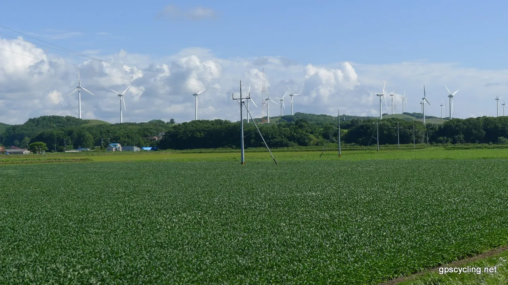
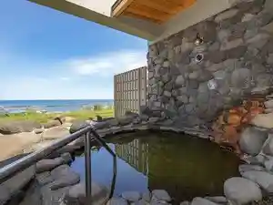
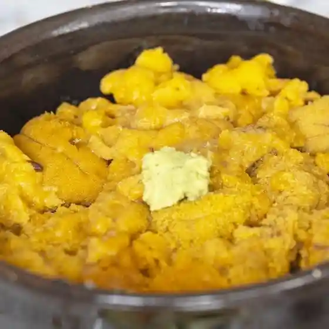
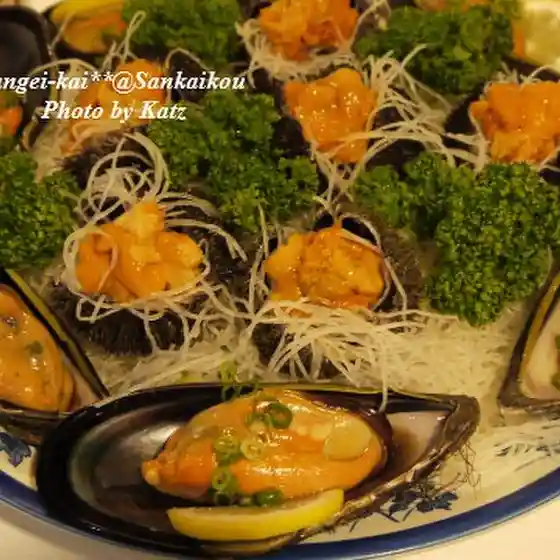
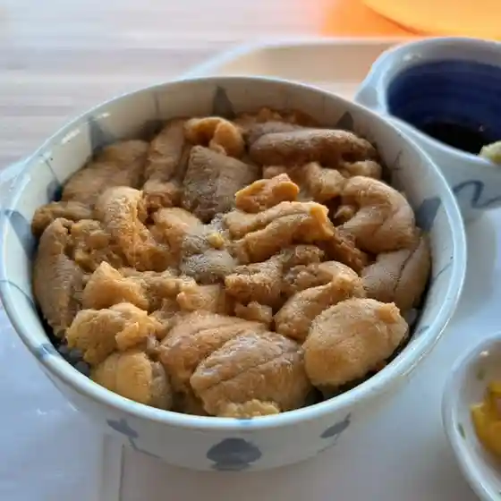
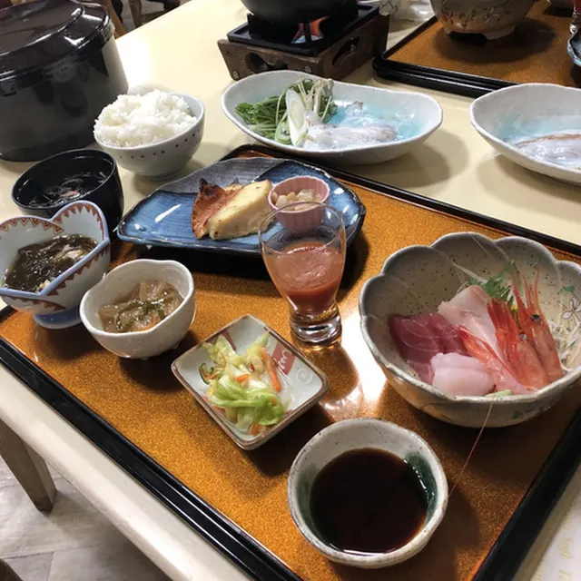
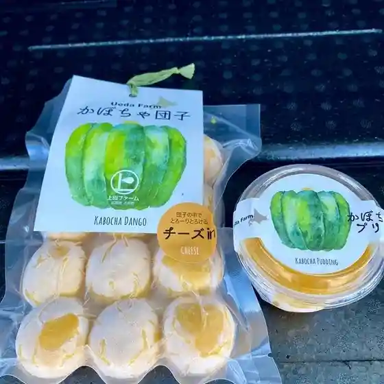
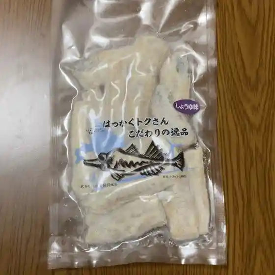

Tomamae
Tomamae · Hokkaido
Tomamae
Highlighted on the Hokkaido map.

Stay
とままえ温泉ふわっと

Tomamae Onsen Fuwatto
Dining
ドライブインさわ

Doraibuin Sawa
山海幸

Sankai Sachi
ココ・カピウ

Koko Kapiu
とままえ温泉ふわっと

Tomamae Onsen Fuwatto
直売所 よってけ屋

Chokubai Tokoro Yotteke Ya
ななかまどの館

Nanakamadono Kan
北るもい漁業協同組合 苫前冷蔵庫 直売所

Kita Rumoi Gyogyou Kyoudoukumiai Tomamae Reizouko Chokubai Tokoro
セイコーマート むらい苫前店

Seikoomaato Murai Tomamae Mise
大衆食堂
Taishuushokudou
スイーツアヒルの店
Suiitsuahiru No Mise
こたん
Kotan
寿司居酒屋 風蓮
Sushi Izakaya Fuuren
レストラン 風夢
Resutoran Fuumu
もつや
Motsuya
志
Kokorozashi
セイコーマート 古丹別店
Seikoomaato Kotan Betsu Mise
ウィンドミル
Uindomiru
縁
Heri
民宿３０ノット
Minshuku 3 0 Notto